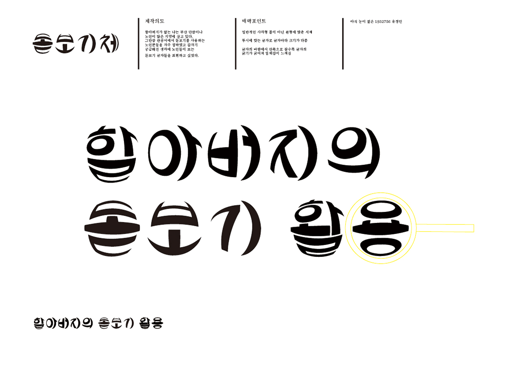
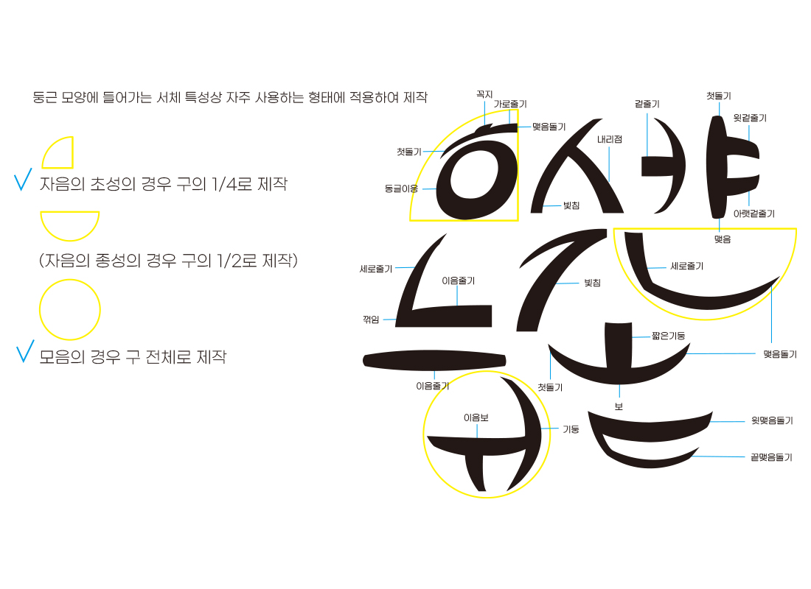

서체 디자인
돋보기체

제작의도
관공서에서 돋보기를 사용하는 노인분들을 자주 접하여 노인분들이 사용하는 돋보기 안경에 비친 글자를 서체로 표현하자 하였다
포인트
원형에 맞는 서체
투시에 맞는 서체로 굵기의 변화
서체의 바깥 부분에서 안으로 갈수록 굵기가 굵어져 입체감이 느껴짐

자음의 초성의 경우 구의 1/4로 제작
자음의 종성의 경우 구의 1/2로 제작
모음의 경우 구 전체로 제작

자음과 모음
관공서에서 돋보기를 사용하는 노인분들을 자주 접하여 노인분들이 사용하는 돋보기 안경에 비친 글자를 서체로 표현하자 하였다
원형에 맞는 서체
투시에 맞는 서체로 굵기의 변화
서체의 바깥 부분에서 안으로 갈수록 굵기가 굵어져 입체감이 느껴짐
자음의 초성의 경우 구의 1/4로 제작
자음의 종성의 경우 구의 1/2로 제작
모음의 경우 구 전체로 제작
자음과 모음